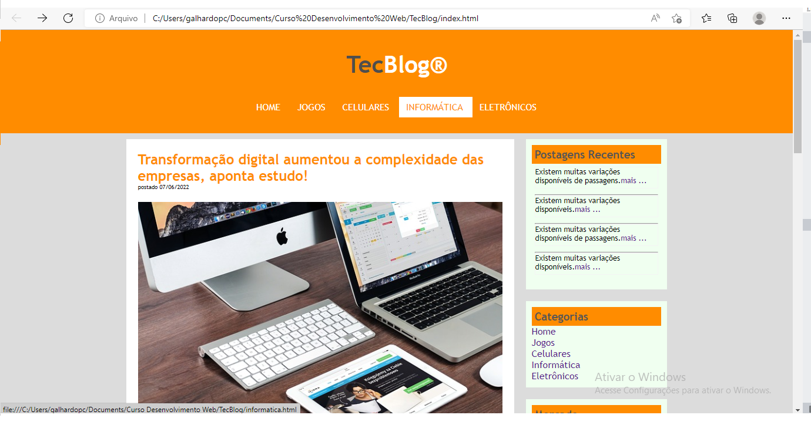

Portifólio Jonathan Galhardo
Destaques
Site Notícias Cidade

Projeto desenvolvido durante o Curso de Desenvolvimento Web Completo. Colocando em prática os conhecimentos adquiridos no módulo de CSS3 Avançado.
mais..Site TecBlog
Projeto desenvolvido durante o Curso de Desenvolvimento Web Completo. Colocando em prática os conhecimentos adquiridos no módulo de CSS3 Intermediário.
mais..
© Copyrigth 2022 - Portifólio Jonathan Galhardo B. Silva - Todos os direitos reservados.